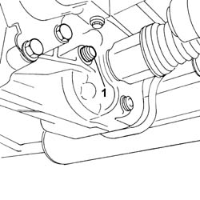
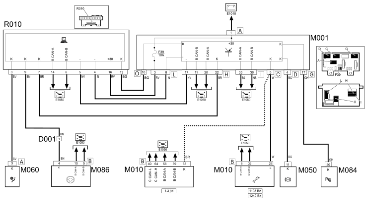
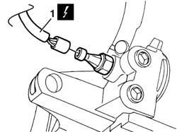
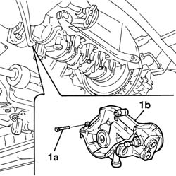

1020D14 FRONT CRANK SHAFT OIL SEAL COVER - R + R AND REPLACE SEALS FOR VERSIONS WITH OIL PUMP ON CRANK SHAFT, TIMING SIDE
- Path
- Procedures > 10 ENGINE UNIT > 1020 CRANKCASE SUMP AND COVERS > 1020D OIL SEALS ON CRANK SHAFT > 1020D14 FRONT CRANK SHAFT OIL SEAL COVER - R + R AND REPLACE SEALS FOR VERSIONS WITH OIL PUMP ON CRANK SHAFT, TIMING SIDE
- Kind
- repair procedure (removal / refitting; the operation number is the code)
- Applies to
- engines: 1.1, 1.2 8v; all production periods
- Interactive page
- https://sloeber94.github.io/elrnDB-fPnd/en/#/2752426
Applies to: engines: 1.1; all production periods
 Removing
Removing
 Refitting
Refitting
Applies to: engines: 1.1; all production periods

Applies to: engines: 1.2 8v; all production periods
Removing
RefittingOp. 1048A10 AIR CLEANER FILTERING ELEMENT - REPLACE
Op. 5510C30 ENGINE TIMING SENSOR - R+R
Op. 4450B04 RIGHT FRONT WHEEL R R
Op. 7055B54 UNDER-ENGINE GUARD - R R
Op. 1092B60 ALTERNATOR DRIVE BELT - R + R
Op. 1092A10 CRANKSHAFT SERVICES PULLEY - R.R.
Op. 1032D12 TIMING SYSTEM PROTECTIVE COVER(S) - R + R
Op. 7055A42 FRONT GRILLE - R+R
Op. 1032B10 TOOTHED TIMING BELT - R + R FOR TIMING ADJUSTMENT OR REPLACEMENT
Op. 1020A20 CRANK CASE OIL SUMP - R + R CLEAN SEALS FOR SEALANT APPLICATION
Op. 1084B28 ENGINE OIL INTAKE PUMP - R + R WITH CRANKCASE SUMP REMOVED
Op. 1084B30 ENGINE OIL FILTER R R
1. Disconnect the electrical connection for the engine oil pressure sender unit.
Description | Connector | |
|---|---|---|
1 | Engine oil pressure sensor | K28 |

Applies to: engines: 1.2 8v; all production periods
1. Undo the fixing bolts (1a) and remove the crankshaft front oil seal cover with built-in oil pump (1b).
Remove the seal.

Applies to: engines: 1.2 8v; all production periods
Refitting
RemovingFit a new seal.
Fit the crankshaft oil seal front cover with built in pump in place and tighten the fixing bolts to the torque indicated.
Fastening | Component | Ø | Value (daNm) | |
|---|---|---|---|---|
- | Bolt | FRONT COVER CRANKSHAFT | M6 | (Cylinder block/crankcase) 1 |
Connect the electrical connection for the engine oil pressure switch.
Description | Connector | |
|---|---|---|
- | Engine oil pressure sensor | K28 |
Op. 1084B30 ENGINE OIL FILTER R R
Op. 1084B28 ENGINE OIL INTAKE PUMP - R + R WITH CRANKCASE SUMP REMOVED
Op. 1020A20 CRANK CASE OIL SUMP - R + R CLEAN SEALS FOR SEALANT APPLICATION
Op. 1032B10 TOOTHED TIMING BELT - R + R FOR TIMING ADJUSTMENT OR REPLACEMENT
Op. 7055A42 FRONT GRILLE - R+R
Op. 1032D12 TIMING SYSTEM PROTECTIVE COVER(S) - R + R
Op. 1092A10 CRANKSHAFT SERVICES PULLEY - R.R.
Op. 1092B60 ALTERNATOR DRIVE BELT - R + R
Op. 1092B64 ALTERNATOR DRIVE BELT - ADJUST TENSION
Op. 7055B54 UNDER-ENGINE GUARD - R R
Op. 4450B04 RIGHT FRONT WHEEL R R
Op. 5510C30 ENGINE TIMING SENSOR - R+R
Topics linked from this page (15)
- 0010T12 engine oil and filter replace
- 1020A20 CRANK CASE OIL SUMP - R + R CLEAN SEALS FOR SEALANT APPLICATION
- 1032B10 toothed timing belt - r + r for timing adjustment or replacement
- 1032D12 timing system protective cover(s) - r + r
- 1048A10 air cleaner filtering element - replace
- 1084B28 engine oil intake pump - r + r with crankcase sump removed
- 1084B30 engine oil filter r r
- 1092A10 Crankshaft services PULLEY - R.R.
- 1092B60 alternator drive belt - r + r
- 1092B64 alternator drive belt - adjust tension
- 4450B04 right front wheel r r
- 5510C26 rpm sensor - r+r
- 5510C30 engine timing sensor - r+r
- 7055A42 FRONT GRILLE - R+R
- 7055B54 UNDER-ENGINE GUARD - R R